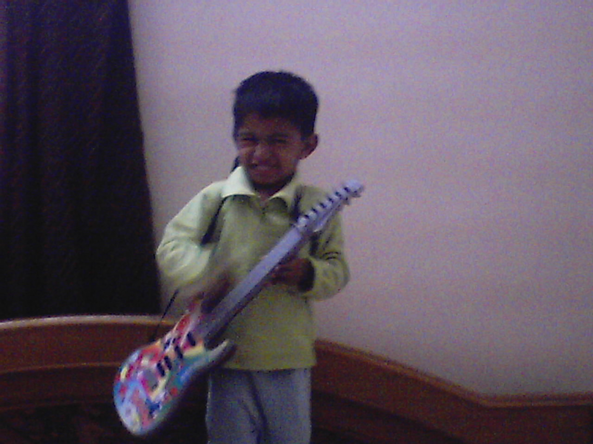

About Me
Hello! I’m Virat – a national-level table tennis player, state-level badminton athlete, and someone who thrives on balancing a multitude of interests. As a proud member of the NCC, I’ve developed discipline and teamwork skills, which I bring to both my sports and tech pursuits.
Off the court, I’m a budding coder, diving into the world of C programming and constantly exploring new ways to challenge myself. One of my key projects is NutriPrint, a unique app that not only plans personalized meals but also prints them! It merges cutting-edge AI with the convenience of 3D food printing, making healthy eating a breeze (and futuristic, to say the least).
As an extrovert, I love meeting new people and making connections. Whether through my quick wit, a well-placed joke, or a casual chat, I’m known for making others feel comfortable. When I’m not coding or practicing my backhand, you’ll likely find me singing – a hobby that helps me unwind and keeps the creativity flowing. I aim for excellence in everything I take on, whether in athletics, coding, or singing. Calm and focused under pressure, I’m always ready for the next challenge (as long as it's not debugging during a finals match!).